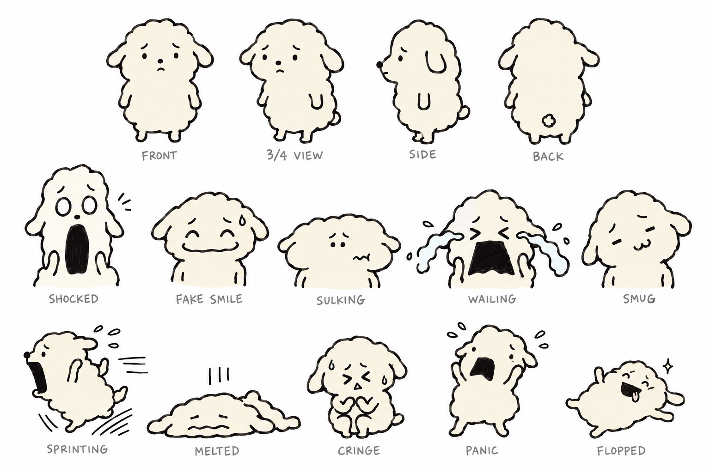
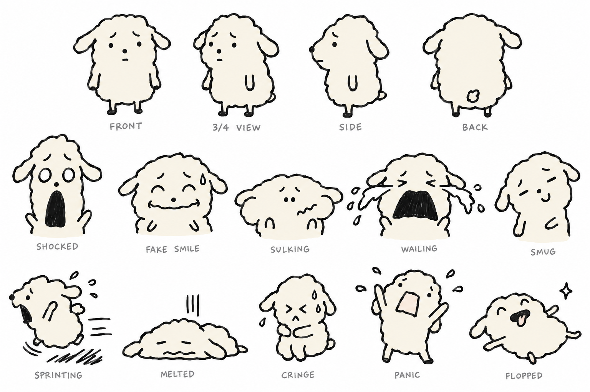

두부 시트 v2 후보 — 삐뚤삐뚤 손그림 + 입·표정 확장
2026-09-24 · gpt-image-2.5-sunburst · high · 1536×1024 · 참조 이미지 없음(기존 시트·깜자 미사용, 텍스트만) · 각 $0.04
- 공통 변경: 입 추가(점·대시·물결·검정 O·역사다리꼴·3자·혀 등), 눈 변형 확대, 감정에 따라 머리가 찌그러짐(길쭉·납작·기울임), 좌우 비대칭, 마커 선 흔들림.
- 유지: 크림 #F6F2E6 단색, 구름형 외곽, 처진 귀, 점 코, 걱정 눈썹은 모든 도에 고정.
- 1행 턴어라운드(기본 얼굴, 입은 작은 선). 2행 표정 5: 경악·억지웃음·삐짐·통곡·능글. 3행 포즈 5: 도망·녹아내림·움츠림·패닉·벌러덩.
A안 — 마커 낙서 (선 흔들림 중간)
프롬프트: dubu-sheet-v2a-prompt.txt

B안 — 휘갈김 (선 흔들림 강함, 이음새 틈·겹선 허용)
프롬프트: dubu-sheet-v2b-prompt.txt · 패닉 컷 입 안쪽에 연분홍이 살짝 들어감

비교용 — 현행 시트
dubu-sheet.html (입 없음, 매끈한 펜선)